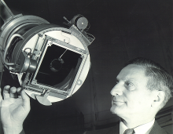

Please note: the AAS Obituaries are temporarily being hosted on this website while their full content is being ingested into the PubPub publishing platform newly adopted by the Bulletin of the American Astronomical Society. When the migration is complete, your existing links will take you to the final, migrated content. Contact peter.williams@aas.org with any questions.
William Markowitz (1907-1998)
William Markowitz, an astronomer at the US Naval Observatory from 1936 to 1966, died in Pompano Beach, Florida on 10 October 1998. He served as Director of the Observatory's Time Service Department (1953-1966) during a period when timekeeping and time dissemination underwent rapid progress.
His principal research concerned the speed of rotation of the Earth and the motion of its pole; the polar motion occurring at decadal time scales known as the "Markowitz wobble" is named after him. Markowitz was born February 8, 1907, in Mlec, Austria, where his mother was visiting from her native Poland. In 1910 his family immigrated to Chicago. Interested in astronomy from an early age, Markowitz obtained his PhD in astronomy from the University of Chicago in 1931, working under W.D. MacMillan and writing his dissertation on the statistics of binary stars. During this period he also worked at Yerkes Observatory under Frank Ross. After teaching at Pennsylvania State College, he joined the US Naval Observatory in 1936, working under Paul Sollenberger and with Gerald Clemence. He spent almost his entire career in the Time Service Department, except for the years 1949-1952, during which he made visual observations of double stars. One of Markowitz's early duties was operating the Photographic Zenith Tube (PZT), designed by Ross and used at the Naval Observatory beginning in 1915 to observe astronomical latitude variations, and since 1934 to determine Universal Time.
In 1949, when the Observatory established a new time station near Miami, Florida, Markowitz and Sollenberger designed a new and improved PZT. The variation of latitude, also determined with the PZT, was one of the chief interests of Markowitz throughout his career; it was the analysis of this data that led to his contributions to the study of polar motion. Markowitz directed the Time Service Department during a period when methods for more uniform and accurate time were being devised. When "Ephemeris Time" was proposed in the early 1950s based on the orbital motion of the Earth rather than its rotation, Markowitz devised a practical means for its determination by inventing the dual-rate Moon camera bearing his name. The first such camera was placed in operation on the 12-inch refractor at the Naval Observatory in June 1952, and 20 cameras of a second model were used around the world during the International Geophysical Year (1957-1958). With data from these cameras, from 1955-1958 Markowitz worked with Louis Essen at the National Physical Laboratory in Teddington, England to calibrate the new atomic clocks in terms of the Ephemeris second. The number they determined, 9,192,631,770, became the fundamental frequency of cesium atomic clocks, and has been used as the definition of the second internationally since 1967. In 1958, Markowitz also devised the first system of Atomic Time, designated A.I. As Director of the Time Service, Markowitz was fundamentally concerned with improvements to the dissemination of time. At the IAU meeting in Dublin in 1955 he proposed the system of UT0, UTI and UT2, which corrected universal time successively for polar motion and seasonal variations in the Earth's rotation. The system went into effect within months, with UT2 being disseminated internationally. Markowitz was a participant in experiments in synchronizing time around the world using artificial satellites and atomic clocks transported by airplanes. He also contributed to the Navy system of time and frequency transmissions and the control of precise time via Loran-C and the Transit navigation satellite. Markowitz was heavily engaged in international cooperation in time. He served as President of the Commission on Time of the international Astronomical Union from 1955 to 1961, and was also active in the International Union of Geodesy and Geophysics, the American Geophysical Union, and the international Consultative Committee for Definition of the Second. After retiring from the Naval Observatory, Markowitz served as Professor of Physics at Marquette University (1966–1972), and Adjunct Professor at Nova University in Florida. Markowitz married Rosalyn Shulemson in 1943. He is survived by a sister, Mary, son, Toby, daughter-in-law, Dorothy, and granddaughter, Alison. An oral history interview is on deposit in the Library of the US Naval Observatory.
Photo courtesy of the US Naval Observatory.
Obituary written by: Steven J. Dick (US Naval Observatory), Dennis D. McCarthy (US Naval Observatory)
BAAS Citation: BAAS, 1999, 31, 1605
SAO/NASA ADS Bibcode: 1999BAAS...31.1605D